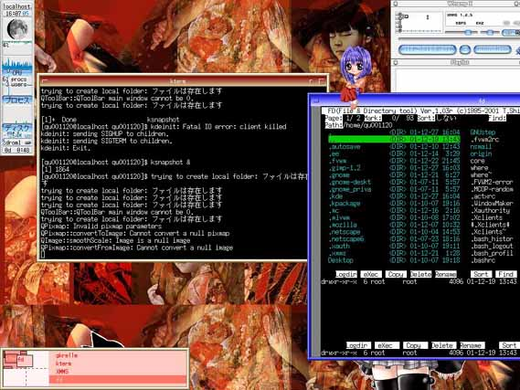
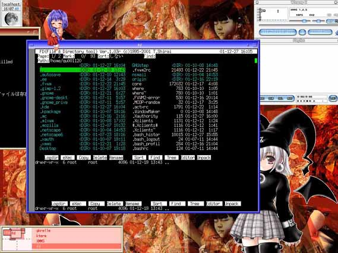
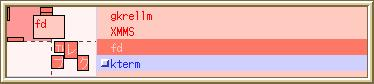
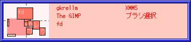
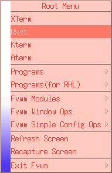
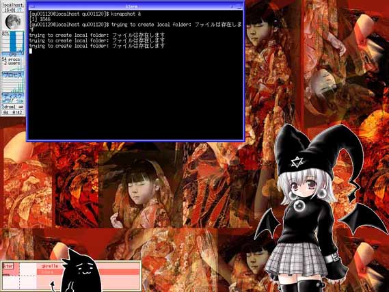

トップページ＞＞＞「いろいろ」目次
FVWM(fvwm-2.4.3)ウインドウマネージャチューニング始末記（第一回）
初版作成：2002/01/06
- 服用する前にお読みください
- 前書き
- 本題
- 後書き或いは感想
このページの内容は本来非常に個人的なもので、目的は自分が将来もう一度FVWM2のカスタマイズをする時の、自分の理解力、洞察力に合わせて、もう一度資料を調べ直すときの単なる道しるべです。
したがって「このページを見ればカスタマイズは完璧！」というわけではありません。わからないことは自分でHPなりmanページなりを調べて下さい。
このページは、「すげーいい加減で適当な単なる参考資料」に過ぎません。
そこの所を取り違えずにご利用下さい。（あ、無責任か？・・・でもこういう場合の責任の定義がはっきりしないしなあ・・・。）
このページに書かれている内容は全て、風晶個人の環境におけるものです。
このページに書かれている内容を参考にして設定を変更するときは、設定を変更する当人の責任において変更して下さい。それによる全ての影響は、風晶とは全く関係ありません。
以上のことに同意された方のみ、以下の駄文混じりの資料を利用して下さい。
同意されなくても見るのは構いませんが、それによるいかなる影響も風晶の責任
ではありません。
参考ホームページ
FVWM：http://www.fvwm.org/
日本のリナックス情報・X関連リンク集：http://www.linux.or.jp/link/x.html
「何か。」ninix：http://www.geocities.co.jp/SiliconValley-Cupertino/7565/#NINIX
GKrellM：http://web.wt.net/~billw/gkrellm/gkrellm.html
ActX：http://www.astr.tohoku.ac.jp/~taji/ActX/
XMMS：http://www.xmms.org/
目次に戻る
ああ・・・一体何をやっているのだ？俺は・・・。
そう。
なぜ。なぜLinuxを。しかもウインドウマネージャとしては古参の部類に入る
FVWMの設定をいじくっているのだろう。ninix、actx、gkrellm・・・これらの
インストールも正常に終わる。メニューのカスタマイズも終わり、かなり快適な
作業環境が手に入った。およそ二週間に渡る、僅かな日本語資料と大量の英語
マニュアルとの格闘。
まあ、あれだ。RedHatLinux 7.1を試しに入れてみて、いま流行のリナックス
というやつを体験してみたかったわけだ。インストールは特に問題なく終了し、
Windows98SEとのデュアルブートもLILOを使ってできた。（詳しく知りたい人は
Linux関連の雑誌を読もう。CD-ROM付きなら、だいたい何らかのLinuxディストリ
ビューションが収まっており、インストール方法も載っているはずだ。）
だが、ですよ。実は以前にもTurboLinuxをインストールしたことがあって、
その時のウインドウマネージャ、GNOMEにいまいちしっくりこなかったのです。
まあ理由は愚痴になるので言いませんが、Windowsばかりでしたから。
単純に、慣れなかったんでしょう。
ほかにも色々理由がありましてTurboLinuxはやめたのです。
で、今回のRHL(RedHatLinuxの独自の略称)ね。GNOMEは使いづらかったので
KDEの方を標準デスクトップに選びました。このKDE、結構ハイセンスでお気に入
りではあったのだけど・・・。やっぱりしっくりこない。しかもなぜかXMMS
(MP3プレイヤー)の調子がおかしい。結論。いまいち慣れない。
で、ある日本屋でぶらぶらしていたら翔泳社から「WindowManager 完全攻略」
（大畠祐一、丸山国明、吉澤匤）というものを見つけまして。ちょっと見てみ
たら紹介しているバージョンが多少古いもののfvwm,qvwm,AfterStep,WindowMaker,
KDE,Enlightmentなどの主要ウインドウマネージャの設定の概要がうまくまとめ
られておりまして。買ってみたわけです。
買ってはみたもののなかなか読む機会を得ず、半年ほどほっぽりだされてい
たのですが、12月の初め頃ようやく眺めるチャンスがありました。で、色々
調べてみるとFVWMというかなり古いウインドウマネージャが一番自分の性に
合っているような気がします。
理由は仮想デスクトップの扱いです。KDEとかGNOMEは言うに及ばず、通常の
ウインドウマネージャは複数のデスクトップを扱えます。ですが各デスクトップは
普通は連続しておらず、あるデスクトップからウインドウがはみ出してしまっ
た場合、隣のデスクトップに移動するとそのはみ出た部分が見える・・・という
様なことはありません。つまり、誤って重要なアプリケーションウインドウを
画面外にドラッグしてしまっても設定ファイルを書き換えない限り元に戻せない
のです。
Windowsでもやった人居ませんか？タイトルバーをマウスでドラッグしている途中、
勢いが良すぎて完全にタイトルバーを画面外に移動してしまい、以降、そのウインドウの
移動ができなくなってしまったこと。
しかし、FVWMの場合個々のデスクトップ（正確にはページ）は連続しています。
標準では一つのデスクトップにつき四枚のページを作り、一つのページの大きさは
画面サイズと同じです。で、各ページは上下左右に繋がっています。右上のページから
右下へ。右下から左下へ、そして左上のページへ。或いは左下から右上のページ
へ。
FVWMのページ管理の最大の特徴は、隣り合っているページの「中間」を表示
できる点にあります。
たとえば左上のページで作業していたとしましょう。あるウインドウを右に
移動しすぎて、見づらくなってしまいました。通常のウインドウマネージャでは
これはもうどうしようもありません。しかしFVWMの場合、見えている範囲を
ずらすことができます。これにより、表示範囲を左上のページのみから
ちょっとずらし、右上のページへ半分くらい移動させることができます。
つまり、見えている範囲は常にディスプレイサイズである1024x768ですが
実際のデスクトップとしては縦横二倍の2048x1536を使っていることになります。
これ以上の言葉は不要でしょう。見ていただければ分かる思われます。
まず、これが最初の状態です。右の方にある「fd」（FD clone:ファイルマネージャ
FDのLinux移植版）が、右半分ほどが画面からはみ出てしまっていますね。

普通のウインドウマネージャではこの場合、fdのウインドウを移動しなければ
全部は見切れません。しかしFVWMでは代わりに見えている範囲をずらすことにより
・・・

fdウインドウの全部が収まりました。左端の方には、先ほどの画面中央にあ
ったktermウインドウのがちらりと見えています。つまり、表示範囲を右にずらした
ことがおわかりいただけたと思います。
これはFVWMの機能の一つである「FVWM Pager」によって実現できます。
もう少し詳しく紹介します。まず、下のイメージを見て下さい。

左三分の一を占めている、四角が縦横四つ並んでいる部分が「Pager」です。
これでデスクトップや、ページを切り替えます。ここで、マウスのドラッグ
操作により・・・

えっと・・・Pager中の薄い桃色で表されている矩形が移動しているの、
わかりますか？これがFVWMの特徴です。
前置きはこれぐらいにして置いて・・・。
ちなみに私のカスタマイズでは、メニューはこんなになります。

最終的に今期のカスタマイズの結果は以下のようになります。

左上が「gkrellm」、パフォーマンスメータです。オプションで月齢表示も
させています。
中央下に「居る」のは「ninix」で、一定時間毎にランダムに右の人間と
左の小動物が会話してくれます。
背景は・・・日本画家の智内兄助さんの画集からスキャナで取り込み、加工
したものです。
全体のイメージは、「いちごチョコレート」(アポロで通じる人、いるかな？)
を目指しております。
ウインドウマネージャのカスタマイズは、一般にグラデーションや綺麗なアイコン
を使ってメタルに、シックに、アニメに、スタイリッシュにする場合が多いですが、
fvwmの場合どこにでもグラデーションをかけられるわけではありません。
また各ウインドウパーツの背景にアイコンを使えると言っても、自動拡縮が
どこにでも効くわけでもないので全体的に中途半端に不便です。カスタマイズ
の初期にはメニューにもグラデーションをかけていたのですが、選択されている
メニュー項目だけグラデーションを変えると言ったことができないため、望み
道理にできず諦めました。
結局、グラデーションもビットマップ背景も使わずにシンプルな画面を心がけます。
目次に戻る
・・・すみません。今までのはFVWMの良さをわかって貰うための前口上です。あ、ちなみにGNOMEやKDEのアプリも、GTKやらQtのライブラリがあればきちんと動きますから。今回のスクリーンキャプチャも、KDEのKSnapShotを使ったものです。
じゃあ。失敗も含めた途中経過も含めて、あまりまとまっていませんがお見せし
ましょう。今回のカスタマイズの全貌を。
まずウインドウマネージャを変更してみましょう。
実はこれが一番苦労しました。
どういうことかと言いますと、RHLの場合startx(/usr/X11R6/bin/startx)という
シェルスクリプトでXを起動するのですが・・・最初、startxがどこにあるか
わからなかったのですよ。必死にKDE付属のファイルマネージャを使って探
しまくり、ようやくさっきも書いた/usr/X11R6/bin/startxに辿り着けたのです。
ここからがまた大変で。流れを必死に追いました。
startx
-----> /etc/X11/xinit/xinitrc
-----> /etc/X11/xinit/xserverrc
（もしホームディレクトリに.xinitrc, .xserverrcが存在すればそちらを優先）
xinitrc（これもシェルスクリプト）
-----> (Xのリソースをロード：すみませんよくわかりません。）
-----> /etc/X11/xinit/xinitrc.d/の中身を実行
-----> /etc/X11/xinit/Xclients
（もしホームディレクトリに.Xclientsが存在すればそちらを優先）
Xclients
-----> ホームディレクトリに「.wm_style」があるか？
-----> あればそこで指定されているウインドウマネージャを/usr/X11R6/bin/RunWM
を使って起動。
-----> 無ければRunWMで指定されているウインドウマネージャを起動。
どーでもいーけど私個人は重要だと思っているポイントは、
１．X11はサーバー。
２．X11はユーザーの要求に応じて起動される。
３．よって、X11はxinitに起動スクリプトが置かれるべきである。
とりあえず、fvwm-2.4.3のコンパイル。
はっきり言いましょう。RPMはやめた方がいい（と私は思っている）。
通常のインストールコマンドである
rpm -i Package_file
は、どこに何がインストールされたか表示されないので、Windowsプログラムの
Setup.exeやinstall.exeよりもおっかないというのが私の感想です。
こうするとインストール過程も全て表示して、テストモードとしてイン
ストール直前まで実行してくれるのですが・・・
rpm -ivv --test Package_file
どちらにせよ、細かいオプションを指定できない、ファイルのインストール先を
指定できない点は変わりません。
何が言いたいかというとですね。fvwm-2.4.3はコンパイル時にオプションを
指定しないと、日本語の表示をしてくれないのですよ。
というわけで。FVWMの最新版はhttp://www.fvwm.org
にて入手できます。え？英語でわからない？・・・技術英語は気合いと根性と、
直感と偏見でどうにかできます！多分・・・（すみません。他の日本語サイトを
調べてみて下さい）。っていうか、2001/12/28時点でfvwm-2.4.4がリリースされてるし。
まあとにかくfvwm-2.4.3.tar.gzをダウンロードしてきて、適当なディレクトリで
tar zxvf fvwm-2.4.3.tar.gz
fvwm-2.4.3というディレクトリができるので、その中に移動しまして。
./configure --help
をするとコンパイル時に使用できるオプション一覧が表示されます（コンパイルという
用語がわからなくても特に問題ありません）。
重要なのは、--enable-multibyte オプションを指定することです。これ
で初めて日本語メニュー、ウインドウタイトルなどが（日本語フォントを指定しておけば）
正常に表示されます。
./configure --enable-multibyte
make
suでrootユーザーになって、
make install
・・・こんな感じですか。インストールディレクトリはデフォルトで
/usr/local/となります。実行ファイルが/usr/local/bin/fvwm2。その他が/usr/local/libexec
だの、/usr/local/share/だのにコピーされます。
なるべくデフォルトディレクトリにした方が・・・あとでいろんな資料を参照するとき、
混乱しなくて楽だと思われます。
インストール時の詳細はいろんな雑誌や、本やインターネットを参考にして下さい。
いよいよウインドウマネージャを変更してみましょう。
ここら辺は自分自身あまり覚えていないのですが・・・。
とにかく、ホームディレクトリに.wm_styleというファイルを作ってその中に起動する
ウインドウマネージャ名（今回はFvwm95）を記述しておきます。
ここら辺の仕組みはRunWMのスクリプトを参照して下さい。で、実行する本体ファイルは
コンパイルしてできた/usr/local/bin/fvwm2にしときます。
とにかく、.wm_styleファイルからウインドウマネージャの指定を読みとっている
部分を探し出し、「Fvwm」とか「Fvwm95」とか書かれていたら/usr/local/bin/fvwm2を
実行することがポイントです。従ってある程度シェルスクリプトを読めるようになって
おいたほうが良いでしょう。
修正が終われば、startxでXを再起動します。もしfvwmのインストール、startx以降の
スクリプトの変更が正しければ恐ろしく味気ない画面が出てくるはずです。
ここからが第二ラウンドの始まりでした。
三、落書き（メモ）に残っていた闘いの日々
第二ラウンドの全容は正確には把握できていません。自分の書き付けたメモがあまりにも
とりとめのないものだったので・・・。とにかく、順不同かつ乱雑なメモ、そして僅かに
残っている記憶を元にその日々を再現しましょう。
１．背景の設定その壱
初めに挑戦したのは「xload」と呼ばれるプログラムだったようだ。xloadのmanページ
からメモったらしい書き付けが幾つか見つかる。但し自分の記憶では最終的に、JPEG画像
も扱える「xsetroot」を使用したはずだ。というか現在の設定はそれだし。
２．端末の設定その壱
次ぎに挑戦したのは新しいX端末のインストールだったようだ。RHLのKDE(GNOME)には
標準で「Xterm」「Rxvt」「Kterm」がインストールされている。しかし。様々なFVWMの
カスタマイズ画像（SnapShot）を見ている内に「Aterm」と呼ばれる、壁紙を適当な
濃度で透過処理して端末の背景に使えるX端末を発見した。検索するとすぐに公式
サイトが見つかり、ソースファイルをダウンロード。./configureオプションはかなりの
数に上り、日本語処理も表示だけなら対応できるようだ。
--enable-fading
--enable-background-image
--enable-next-scroll
--enable-xtermscroll
--enable-menubar
--enable-graphics
--enable-half-shadow
--enable-kanji
--enable-big5
・・・と、指定したオプションは上記のようだった。--enable-multibyteは無いらしい。
ただ現時点でkinput2が使えないのが残念だ。
ともかく、これで新たに「Aterm」がX端末の仲間に加わった。メニューも書き換える。
３．時計の調整
xclockのアナログ表示がいい加減古くさくて嫌になる。そのため少々xclockのman
ページを調べた形跡が残っている。
アナログ時計を表示するときは
xclock -analog
デジタル時計を表示するときは
xclock -d
xclock -digital
デジタル時計で日付無効は
xclock -d -brief
全ユーザーのxclockのデフォルトを一気に設定したいときは
<XRoot>/lib/X11/app-defaults/XClock
で設定できるらしい。
４．端末の設定その弐
前にインストールが終わった「Aterm」を、細かいオプションを付けて実際に
背景を透過処理させてみる。
aterm -rv -bg<color> -fg<color> -tr
で、更に./configure時のオプションを付け足したらしくって、
--enable-transparency=yes
でコンパイルし直した形跡がある。
また、
-sh：背景の明るさ
-fade：フォーカスを失ったときの明るさ
-tint<color>
-tinttype true：もしshadingオプションがかかっていると、trueに。
５．日本語フォントはどれにする？
ズバリ、xfontselを利用します。適当な端末から
$xfontsel &
で古くさそうな画面のアプリケーションが起動します。ここで、Xにインストールされている
フォント名と、実際のフォントが表示されます。
今回のカスタマイズでは、基本的に
-alias-*-medium-r-*-*-14-*-*-*-*-*-*（・・・*の数間違ってるかも）
最後が「*」だけなら、省略形として
-alias-*-medium-r-*-*-14-*
が利用できました。小文字、大文字には14ではなく12や16を利用することにしました。
あと、watanabeフォント
-watanabe-fixed-bold-r-*
もトライした形跡があるのですが結局使いませんでした。
６．fvwmの再コンパイルの形跡が・・・
fvwm-2.4.3の--enable-multibyteを知ったのは、初めてビルドしてから１週間ほど
たってからだったと記憶している。八王子のデパートで本屋をぶらついていると、Linux
関連書籍で一冊丸々fvwmについて解説した本が置いてあった。そこでちらりと調べて
みると、
--enable-multibyte
でコンパイルし、環境変数の設定で
LANG=ja_JP.ujis
export LANG
を*profileに記述しておく必要があるらしい。
・・・結局、RHLの環境では環境変数の設定は必要なかったらしくコンパイルオプション
だけで日本語表示ができました。
７．Aterm再々論
Atermは.Xdefaultに初期起動状態を設定できる。書式はAtermのmanページを開いて
くれれば詳細が載っています。
man aterm
８．xmixerを試してみる
KDEを避けた原因の一つであるXMMSへの前哨戦です。とりあえず、KDEのメニューを
調べてマルチメディア系の基本的なアプリを逆に調べ上げ、fvwmのメニューに加えます。
で、そこから一つ一つ動作を検証していきました。
最初に検証したのはCDプレイヤーである「xplaycd」です。
xplaycd -l/-all -device<device>
これでとりあえずCDは聴けることが判明しました。サウンドデバイスの設定は
su
soundconfigure
で問題なくリーナス・トパーズ氏の声が聞けました。
で、xmixerの動作検証も問題なくできました。
これでXMMSへの下準備が終わります。
９．デスクトップアクセサリー（ninix, gkrellm)
今回アクセサリーとしてインストールしたのは「何か」(ninix）、「GKrellM」、
最後の最後に「ActX」を入れました。
全部特に問題なくインストールできました。gkrellmに関してはgkrellmoon（月齢
表示用プラグイン）も問題なく追加できました。ninixに関しては初期インストール
状態ではタイトルバーがくっついていましたが、後に設定を変更して希望どうりに
行きました。
Style "Ninix" UsePPosition, ClickToFocus, NoTitle, WindowListSkip, NoHandle
必要に応じて
ninix -R num
で、numピクセルだけ表示される画像位置が底上げされます。
１０．XMMSの導入と敗戦
さて、いよいよXMMSのインストールです。今回は予めXMMSのHPより、ソース
コード（tar.gz）をダウンロードしてきてあります。RPMではなく、ソースから
直接ビルドします。
しかし。RHLのインストール時点で既にRPMのXMMSがインストールされてしま
っています。これを先に削除しなければいけないのですが・・・KDEのメニューに
登録されてしまっているのです。ビルドし直したのを改めてメニューに登録し
なおせば良いだけの話なのですが、今回はRPMのXMMSはそのまま残しておきます。
RPMのXMMSは/usr/binにありました。これにぶつからないようにインストール
します。tar.gzから解凍したREADMEによると
バイナリ（実行）ファイルは/usr/local/binに。
プラグインファイルは/usr/local/lib/xmms/に。
で、ウインドウマネージャ側の設定としては、アプリ毎のスタイル設定に
(FVMW2の場合)
Style "XMMS_Player" NoTitle
Style "XMMS_Playlist" NoTitle
Style "XMMS_Equalizer" NoTitle
とします。
気になる日本語処理も含めて、コンパイル時のオプションは
./configure --enable-multibyte --prefix=/usr/local
としました。
・・・が。やっぱり日本語ファイル名が文字化けしてる。--enable-multibyte
が効いていないのかな。それともFAT32上の日本語ファイル（SJIS）にアクセス
しているせいだろうか。試しに
--enable-nls
を訳も分からず付け足してビルドし直しても・・・駄目だ。
ホームディレクトリにできている.xmmsファイルを見たら、
playlist_font=・・・
とあって、そのフォントをxfontselでみたら英語フォントだった。このせいか？
と思って適当な日本語フォントに入れ替えても・・・駄目だ。日本語は表示
されるが、やはり日本語として文字化けしてしまう。
結論。日本語それ自体は表示できるようだが、日本語ファイル名のコードに
沿ったものにはならないらしい。その理由としてはFAT32上の日本語ファイル名
にアクセスしていることが考えられる。
・・・つまり。ext2上の日本語ファイル名にアクセスすれば、まともに
表示されるのかな？（でもなー。Linux上で日本語ファイル名は・・・あんまり
良い感じしないなー。）
この問題、未解決。持ち越しーーーー！！！！！
１１．KDEから引っ張ってきたアプリ色々
KDEのメニュー設定を調べ、実行ファイルを特定した後FVWMのメニューに
加えなおしたアプリを紹介します。
xplaycd・・・ＣＤプレイヤー
Xpaint・・・簡単なペイントソフト
Ghostview(gv)・・・
xsane・・・スキャナ用のインターフェイスソフトみたいなもん。
xdvi(/usr/bin/xdvi)・・・TeX関連
TiMidity(timidity -iatv)・・・MIDI関連
GTVMPEGPlayer(gtv)・・・MPEGムービープレイヤー
ViIMproved・・・vimのX版です。
Control Panel(control-panel)・・・コントロール・パネル。
xpdf・・・PDFビューア。
xplaycdに関しては、標準では一台目のCD-ROMにアクセスするようになって
います。ですが私の場合、一台目のCD-ROMは調子が悪いのでいつもは二台目
を使っています。xplaycdに二台目のCD-ROMを再生させるには.Xdefaultに
!XPlaycd（これはコメント文）
XPlaycd*cdromDevice /dev/cdrom1
としたら、ちゃんと二台目のCD-ROMを再生してくれました。
１２．XMMSの調子がおかしかった理由（artsサーバー）
KDEのXMMSがおかしかった理由は「artsサーバー」とか言うのの調子が
おかしかったから、らしい。kterm等から「xmms」とフォアグラウンドで
直接実行させる。適当なファイルを選び再生させようとすると、
aRtsサーバーが蘊蓄かんちく・・・
というメッセージが表示される。
試しに「rpm -qa | grep arts」等とやってみるとそれらしいのが幾つか
出てきた。で、色々調べてみたすえartsサーバーはどうやらサウンド機能の
ラッパーみたいなもので、現状では動いていないことがわかった。
で、手動でartsサーバーを起動すると、起動中にハングしたし。
結局よくわからないまま「とにかくRPMのXMMSではなく、ソースからビルド
したXMMSを使おう」ということで落ち着いた。
目次に戻る
最後に。（ウインドウマネージャカスタマイズの心構え）
心得その壱
日本語ドキュメントに頼る事なかれ
心得その弐
RPMに頼る事なかれ
心得その参
GUIに頼る事なかれ
心得その四
標準エディタ(emacs, Xemacs, vi)を恐れる事なかれ
心得その伍
カスタマイズは目的にあらず。本質は作業環境の改善なり。
つまり。はまりすぎないように。ということ。目次に戻る
トップページ＞＞＞「いろいろ」目次